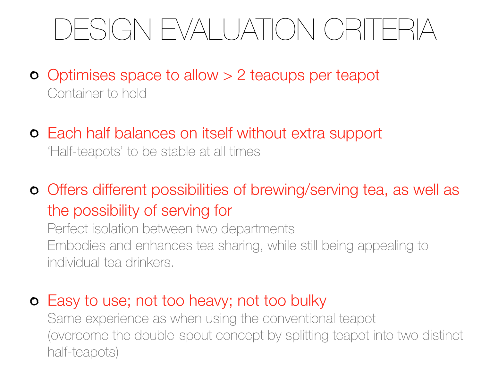

My aim is to keep my design evaluation criteria as simple and purposeful as possible. Having previously described perfection as something simple that works without flaws, it would only be reasonable to construct my evaluation criteria accordingly. As
As shown at the end of the previous chapter "Sketches", I wrote down some of the D.E.C. that my teapot must have. From the beginning, I wanted my teapot to optimise the amount of water that I can hold - however I am aware that too much container space means that more tea can brew inside it, which means that the chances of tea being left over or being over-brewed increase. While promoting the idea that making tea is often a collective action, where tea is brewed for several people and therefore making tea becomes part of enjoying a shared moment, my teapot should still conserve the beauty of tea and should not encourage the possibility of tea being over-brewed. In order to come up
A second major issue that I came across when making my evaluation criteria was that making a double-spout teapot is already a complex enough target - and offering the possibility of removing the separating sheet to make one big chamber with two spouts would be too far-reached and makes the whole teapot not only risky, but complicated and even somewhat irksome. Hence, I decided to discard the idea that my double-chamber can become one single chamber with two spouts.
After re-evaluating my evaluation criteria draft a few times, I constructed a new and final set of criteria, which are the following:

Additional notes: Modelling and Analysis section to address criteria above & evaluate/validate them.